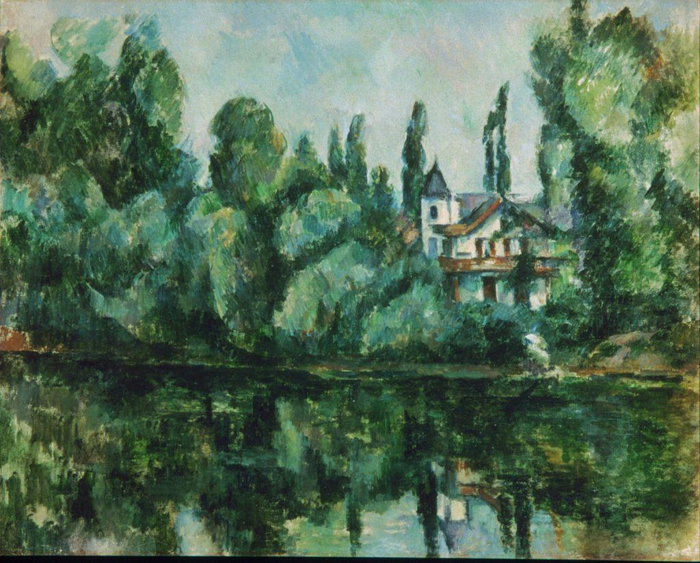

A note on the artwork in this unit. The works in Unit 11 are still under copyright, so we do not reproduce them here. Instead, each one is a link to the official museum or foundation page where you can view it. Open every link as you read. The diagrams on this page are original and generic; they illustrate ideas, not any specific artwork.
📖 TODAY'S FOCUS
What happens to a painting when an artist stops trying to show how things look, and starts showing how the mind actually sees?
For five hundred years, European painters chased one goal: a convincing window onto the visible world. In the early 1900s a few artists tore that window apart. Cubists shattered a single object into many viewpoints at once; others pushed further, until the picture no longer showed any object at all. This is where art breaks the frame.
🎯 BY THE END OF THIS LESSON YOU WILL BE ABLE TO…
1
I will be able to explain how Cubism combines several viewpoints of one object into a single fragmented image.
2
I will be able to describe what non-representational abstraction is, and why Kandinsky and Mondrian pursued it.
3
I will be able to apply the four-step method to an abstract work and prepare for my modern analysis.
📋 WHAT YOU NEED FOR THIS LESSON
▶
A notebook or an open Word document; this lesson sets up your Student-Selected Modern Artwork Analysis
▶
An internet connection to open the museum links; the works are viewed on their official pages, not shown here
📚 PART 1 · LOOK FIRST~12 MIN
👀 LOOK CLOSELY · OPEN THE LINK, THEN COME BACK
Open the first link below and look at the painting before reading on. You will see a face and a guitar, but not from one fixed spot. It is as if you walked around the subject and the artist pinned every angle to the same flat surface at once. Where does the front of the face turn into the side?
🔗 VIEW ON THE MUSEUM SITE
Pablo Picasso, Girl with a Mandolin (Fanny Tellier) (1910)
The Museum of Modern Art (MoMA), New York
Open in a new tab to view the work ›
Cubism, invented around 1907 to 1912 by Pablo Picasso and Georges Braque, broke with a rule that had governed Western painting since the Renaissance: that a picture shows one scene from one fixed point of view. Cubists asked a different question. We never truly see an object from a single spot. We move, we remember the other side, we know a guitar has a back as well as a front. So why not put all of that into one image?
Their answer was to break the subject into fragments and flat planes, then reassemble them so the front, side, and top of a thing appear together. The painting stops pretending to be a window. It becomes a record of looking from many angles over time, flattened onto the picture plane, the actual flat surface of the canvas.
📚 PART 2 · MANY VIEWS, ONE IMAGE~16 MIN
Here is the Cubist idea in its simplest form. Imagine a plain jug. From the front you see its outline; from above you see a circle; from the side you see its handle. Normally a painter must pick one of these. The Cubist refuses to pick, and folds all three views into one flattened image.

The Banks of the Marne, Paul Cézanne, c. 1888. Public domain. Cézanne built his scenes from firm, blocky planes rather than smooth illusion. Younger painters pushed that idea until objects broke into many facets, and Cubism was born.
THE CUBIST IDEA IN ONE SENTENCE
Picture a plain jug: from the front you see its outline, from above a circle, from the side its handle. A normal painting must pick one view. Cubism refuses to pick and folds several views into one flattened image, so a single canvas shows an object from many sides at once.
Once artists accepted that a painting did not have to copy the visible world, a further step became possible. If the canvas is its own flat reality, why must it show any object at all? This question opened the door to pure abstraction.
📚 PART 3 · LEAVING THE OBJECT BEHIND~15 MIN
Around 1910 to 1920, Wassily Kandinsky and Piet Mondrian arrived, by different roads, at non-representational art: paintings of pure color, line, and shape that depict no recognizable thing. Kandinsky believed color and form could move a viewer the way music does, without picturing anything. Mondrian reduced painting to straight black lines and a few flat primary blocks, searching for a calm, universal order beneath the messy surface of nature.
Open these works on the museum sites and notice what is, and is not, there:
🔗 VIEW ON THE MUSEUM SITE
Wassily Kandinsky, Several Circles (1926)
Solomon R. Guggenheim Museum, New York
Open in a new tab to view the work ›
🔗 VIEW ON THE MUSEUM SITE
Piet Mondrian, Broadway Boogie Woogie (1942 to 1943)
The Museum of Modern Art (MoMA), New York
Open in a new tab to view the work ›
REPRESENTATIONAL
The work shows a recognizable thing: a person, a landscape, an object. You can name what you are looking at.
NON-REPRESENTATIONAL
The work depicts no object at all, only pure line, shape, and color. There is nothing to name; the arrangement itself is the subject.
🔍 ARTWORK SPOTLIGHT
Wassily Kandinsky, Several Circles (1926)
View it first on the Guggenheim site (link above), then read and apply the four-step method
Describe: Open the link and look. You see many circles of different sizes and colors floating on a dark background; some overlap, a large pale circle glows near the center, and none of them form a recognizable object.
Analyze: Pure shape and color do all the work. Variation in size and overlap creates depth and movement; the warm and cool colors set up contrast, and the floating arrangement gives a sense of weightless space with no horizon.
Interpret: With no subject to read, the painting asks you to respond to color and form directly, the way you might respond to music. One reading is that it pictures an inner, spiritual harmony rather than anything in the outside world.
Judge: Judge it by its own aim, to move the viewer through pure form. If the arrangement holds your eye and stirs a feeling without naming a thing, it succeeds on the terms it set for itself.
⚠️ WORTH KNOWING · AI & SEEING FROM MANY ANGLES
AI image tools can generate a picture that looks Cubist or abstract on demand, by averaging patterns from countless existing images. What they do not have is the reason Cubists had: a deliberate argument about how human beings actually see. Cubism came from a specific problem the artists set themselves and solved through years of work. AI can imitate the surface style; it does not arrive at the idea. When you analyze these works, you are studying the thinking, not just the look.
✏️ NOW YOU TRY · IN YOUR NOTEBOOK
Pick a simple object near you (a mug, a phone, a shoe). In your notebook, sketch it three times, from the front, the side, and above. Then make a fourth sketch that combines all three views into one flattened, fragmented image, the way a Cubist would. Write one sentence on what the combined version shows that no single view could. This warms you up for choosing and analyzing a modern work.
💪 WHY THIS MATTERS
For centuries art measured itself by how convincingly it copied the world. Cubism and abstraction proposed something radical: that a painting could be true to how we see, or to feeling and form themselves, without copying anything. Every later movement in this unit builds on that freedom. Once the frame is broken, the question is no longer "does it look real?" but "what is this work trying to do, and does it succeed?" That is exactly the question four-step analysis trains you to answer.